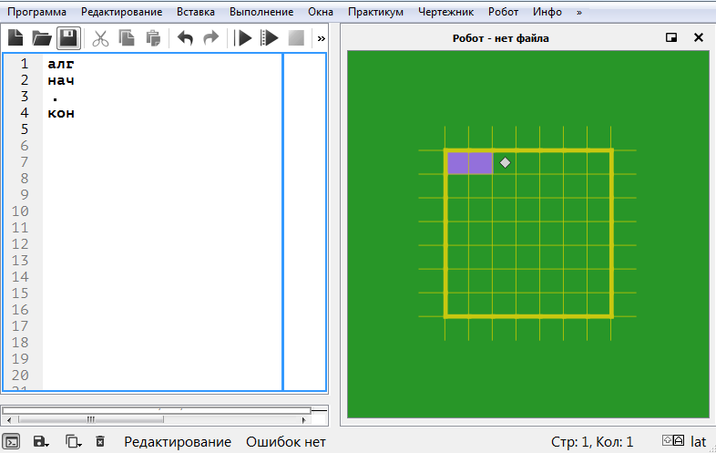
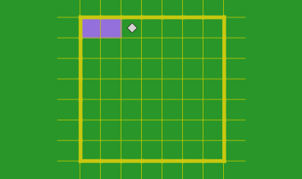

Исполнитель Робот
Исполнитель Робот существует в некоторой обстановке – прямоугольном поле, разбитом на клетки, между которыми могут стоять стены. Обстановка, в которой находится Робот, называется текущей обстановкой Робота. Кроме того, определена еще одна обстановка Робота – стартовая обстановка. Выполнение программы начинается со Стартовой обстановки.
Робот может передвигаться по полю, закрашивать клетки, измерять температуру и радиацию. Робот не может проходить сквозь стены, но может проверять, есть ли рядом с ним стена. Робот не может выйти за пределы прямоугольника (по периметру стоит «забор»). Подробно система команд Робота описана ниже.
Удобно представлять себе, что Робот существует всегда. В частности, когда начинается сеанс работы системы Кумир, Робот уже существует и для него определены и текущая, и стартовая обстановка (они совпадают).
Обстановки Робота могут храниться в файлах специального формата (расширение .fil).
В Кумире есть специальное устройство – Окно наблюдения за Роботом (иногда для краткости будем говорить Окно Роботa). В этом окне всегда видна текущая обстановка Робота, включая положение самого Робота.
Кумир-программа, управляющая Роботом, должна начинаться со строки использовать Робот. При выполнении этой строки Кумир помещает Робота в некоторую заранее определенную обстановку. Эта обстановка и называется стартовой обстановкой Робота.
Таким образом, в каждый момент сеанса работы системы Кумир определены две обстановки Робота – текущая и стартовая.
Текущая обстановка в любой момент показывается в окне наблюдения за Роботом.
Непосредственное управление Роботом из программы осуществляется с помощью команд Роботa.В системе Кумир есть средства, с помощью которых Школьник может задать нужную ему стартовую обстановку. Это можно сделать двумя способами. Один способ – загрузить стартовую обстановку из указанного Школьником файла.Другой способ – редактировать существующую стартовую обстановку с помощью специального редактора стартовых обстановок.
Редактор стартовых обстановок является частью системы Кумир. Редактирование обстановки происходит в окне наблюдения, но при этом окно наблюдения открывается в специальном режиме – режиме редактирования стартовой обстановки. Редактируемая обстановка может быть сохранена в файл или непосредственно использоваться в качестве стартовой обстановки.
В систему Кумир входит пульт ручного управления Роботом . Этот пульт позволяет вручную управлять Роботом – выдавать команды, входящие в систему команд Робота. Использовать пульт можно в любое время, кроме тех временных промежутков, когда происходит непрерывное выполнение Кумир-программы. В частности, Роботом можно управлять с пульта в те моменты, когда выполнение Кумир программы приостановлено (система Кумир находится в состоянии «Пауза»).
Окно наблюдения за Роботом создается в момент начала сеанса работы системы Кумир и доступно до окончания сеанса. Во время сеанса работы окно может находиться в одном из двух состояний – видимо или скрыто (с отображением на панели задач или без).
В момент запуска Кумира окно наблюдения за Роботом скрыто. Чтобы сделать окно видимым, Школьник должен нажать кнопку Робот на панели инструментов или же кликнуть по соответственному пункту меню Окна. Кроме того, окно Робота автоматически становится видимым при запуске на выполнение программы, содержащей строку использовать Робот. Окно Робота становится видимым на том же месте, где оно находилось, когда его последний раз сделали скрытым.
На окне наблюдения за Роботом нет ни меню, ни кнопок. Таким образом, в окне Робота есть только полоса заголовка и рабочее поле.
В левой части заголовка есть надпись «Робот», за которой следует имя файла, в котором хранится стартовая обстановка. Если такого файла нет, то вместо имени файла выводится слово «временная». Правила, определяющие привязку стартовой обстановки к определенному файлу, описаны ниже.
Размер окна наблюдения полностью определяется размерами стартовой обстановки. Пользователь не может менять размер окна с помощью стандартных средств, например, манипулируя мышью.
Окно наблюдения за Роботом может находится в двух режимах:
-обычном – применяется при наблюдении за Роботом во время исполнения программ или управлении с пульта,
-редактирования – применяется при редактировании стартовой обстановки Робота.
Обстановка Робота представляет собой прямоугольное поле, окруженное забором и разбитое на клетки. Говоря более точно, обстановка описывается следующими величинами:
1)размеры обстановки — количество строк (1–128) и количество столбцов (1–255);
2)для каждой клетки:
-наличие стен вокруг клетки,
-признак закрашенности,
-уровень радиации (измеряется в условных единицах, может принимать любое вещественное значение от 0 до 99),
-температура (измеряется в градусах Цельсия, может принимать любое целое значение от -273 до +233).
Примечание. Нижняя возможная температура – это (приблизительно) абсолютный ноль (0 градусов по шкале Кельвина). Верхняя температура – это температура, при которой горят книги (451 градус по Фаренгейту).
Система команд Робота позволяет ему определить значения всех этих характеристик клетки .
Кроме того, в клетке могут быть пометки, видимые наблюдателю, но не доступные «органам чувств» Робота:
-символы в левом верхнем и левом нижнем углах,Частью описания обстановки является и положение Робота. Как и для чтения пометок, у Робота нет средств, чтобы определить свои координаты.
Изображение текущей обстановка по умолчанию полностью помещается в рабочем поле окна наблюдения за Роботом .
Фон рабочего поля — зеленый. Закрашенные клетки – серые(фиолетовые). Между клетками тонкие жёлтые линии. Стены (в том числе – «забор» по периметру прямоугольника обстановки) изображаются толстыми желтыми линиями.Примечание. Все цвета отображения обстановки являются настраиваемыми. Чтобы изменить тот или иной цвет, нужно использовать пункт настройки в меню программа.
В клетке рабочего поля окна наблюдения Робот изображается ромбиком. Температура и радиация не показываются, они могут быть только измерены Роботом. Символы в клетках, наоборот, видны человеку, но Робот не умеет их считывать.
Масштаб изображения обстановки можно изменить, используя колёсико мыши, предварительно сделав активным окно наблюдения за Роботом.
Текущая обстановка изменяется при выполнении команд Робота, подаваемых из программы или с пульта .
Выполнение команд Робота влияет на текущую обстановку следующим образом. Команды перемещения и закрашивания отображаются в текущей обстановке естественно.
Если команда перемещения выдает отказ, то текущая обстановка не изменяется, а на экране (если он виден) соответствующий угол.
Робота закрашивается красным. Красный цвет снимается:
-при выполнении команды использовать Робот,
-при принудительном помещении Робота в стартовую обстановку.
Команды проверок и измерения радиации и температуры на текущую обстановку не влияют.
Кроме того, в двух случаях происходит принудительное помещение Робота в стартовую обстановку (текущая обстановка становится равной стартовой). Это происходит:
-при запуске Кумир-программы, которая использует Робот (окно наблюдения при этом становится видимым, даже если оно было скрыто);
-при изменении имени файла стартовой обстановки Робота (в этой ситуации невидимое окно остается невидимым).